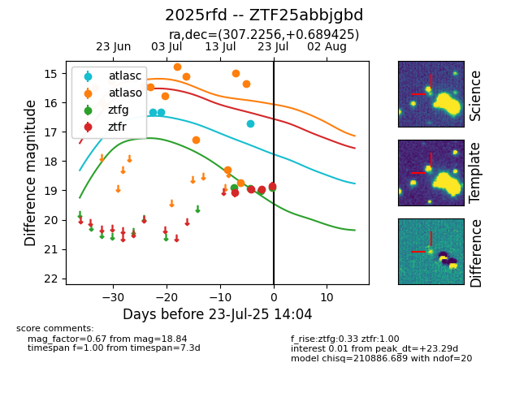

Target ZTF25abbjgbd at 2025-07-23 14:04, see:
FINK: fink-portal.org/ZTF25abbjgbd
Lasair: lasair-ztf.lsst.ac.uk/objects/ZTF25abbjgbd
ALeRCE: alerce.online/object/ZTF25abbjgbd
TNS: wis-tns.org/object/2025rfd
YSE: ziggy.ucolick.org/yse/transient_detail/2025rfd
alt names
ZTF25abbjgbd (ztf,fink)
2025rfd (tns,yse)
coordinates:
equatorial (ra, dec) = (307.2256,+0.68942)
galactic (l, b) = (45.2451,-21.20256)
photometry
last atlasc=16.71, atlaso=15.36, ztfg=18.90, ztfr=18.84
3 atlasc, 14 atlaso, 4 ztfg, 4 ztfr detections
